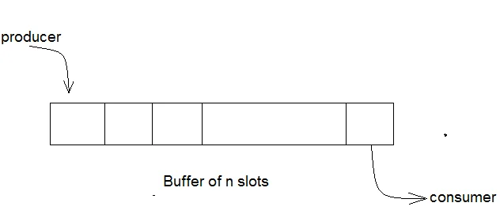
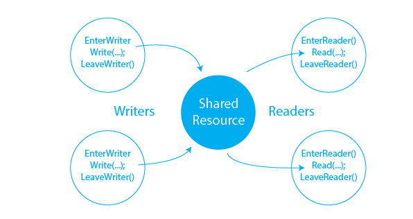

Operating Systems: Process Synchronization
Ahmad Yoosofan
University of Kashan
Sharing Resources
Critical Section
Processes try to use resources simultaneously
- Sharing Physical Resources
- printer
- scanner
- etc.
- Sharing Logical Resources
- files
- read
- write
- variables and arrays
- lots of queues including Ready Queue
- files
Sharing Simple Variables(I)
Share code
double x = 0, y = 1;
\(p_0\)
1 x = y + 4 ; 2 y = x - 2 ;
\(p_1\)
1 x = y + 4 ; 2 y = x - 2 ;
- \(P_0\) 1: x=5, y=1
- \(P_0\) 2: x=5, y=3
- \(P_1\) 1: x=7, y=3
- \(P_1\) 2: x=7, y=5
- \(P_1\) 1: x=5, y=1
- \(P_1\) 2: x=5, y=3
- \(P_0\) 1: x=7, y=3
- \(P_0\) 2: x=7, y=5
- \(P_0\) 1: x=5, y=1
- \(P_1\) 1: x=5, y=1
- \(P_0\) 2: x=5, y=3
- \(P_1\) 2: x=5, y=3
- \(P_1\) 1: x=5, y=1
- \(P_0\) 1: x=5, y=1
- \(P_0\) 2: x=5, y=3
- \(P_1\) 2: x=5, y=3
Sharing Simple Variables(II)
Share code
double x = 0 , y = 1;
\(p_0\)
1 x = y + 1 ; 2 y = x + 2 ;
\(p_1\)
1 x = y + 3 ; 2 y = x + 5 ;
- \(P_0\) 1: x=2, y=1
- \(P_0\) 2: x=2, y=4
- \(P_1\) 1: x=7, y=4
- \(P_1\) 2: x=7, y=12
- \(P_1\) 1: x=4, y=1
- \(P_1\) 2: x=4, y=9
- \(P_0\) 1: x=10, y=9
- \(P_0\) 2: x=10, y=12
- \(P_0\) 1: x=2, y=1
- \(P_1\) 1: x=4, y=1
- \(P_0\) 2: x=4, y=6
- \(P_1\) 2: x=4, y=9
- \(P_1\) 1: x=4, y=1
- \(P_0\) 1: x=2, y=1
- \(P_0\) 2: x=2, y=4
- \(P_1\) 2: x=2, y=7
Machine code
Share code
double x = 2;
\(p_0\)
1 x = x + 2 ;
1 t1 = x + 2 ; 2 x = t1
\(p_1\)
1 x = x - 2 ;
1 t2 = x - 2 ; 2 x = t2
- \(P_0\) 1: x=2, t1=4
- \(P_0\) 2: x=4, t1=4
- \(P_1\) 1: x=4, t2=2
- \(P_1\) 2: x=2, t2=2
- \(P_1\) 1: x=2, t2=0
- \(P_1\) 2: x=0, t2=0
- \(P_0\) 1: x=0, t1=2
- \(P_0\) 2: x=2, t1=2
- \(P_0\) 1: x=2, t1=2
- \(P_1\) 1: x=2, t2=0
- \(P_0\) 2: x=2, t1=2
- \(P_1\) 2: x=0, t2=0
- \(P_1\) 1: x=2, t2=0
- \(P_0\) 1: x=2, t1=4
- \(P_1\) 2: x=0, t2=0
- \(P_0\) 2: x=4, t1=4
How to solve race condition
- Putting Operating System in charge
- Putting a process of Operating System in charge
- Putting different processes in charge of different resoureces
- No process in charge, just write codes the way to solve every race.
General Solutions
- Software solution : (no need to change anything in current cpu)
- Hardware solution : (need to add some instructions to cpu)
Simplifying
1 P0 2 3 Reminder Section 0 4 5 Critical Section 1 6 7 Remider Section 1 8 9 Critical Section 2 10 11 Reminer Section 2 12 13 Critical Section 1 14 15 ........ | . | 1 P1 2 3 Reminder Section 0 4 5 Critical Section 1 6 7 Reminder Section 1 8 9 Critical Section 2 10 11 Reminder Section 2 12 13 Critical Section 1 14 15 Critical Section 2 16 17 ........ | . |
time | p0 | p1 | p2 | p3 |
|---|---|---|---|---|
0 | p0_rs0 | p1_rs0 | p2_rs0 | p3_rs0 |
1 | cs1 | cs1 | ||
2 | p0_rs1 | p1_rs1 | cs3 | |
3 | cs1 | p2_rs1 | cs1 | |
4 | cs2 | p1_rs2 | ||
5 | cs1 | p3_rs1 | ||
6 | cs1 | cs2 | ||
7 | p0_rs2 | cs2 | cs3 | |
8 | cs1 | cs2 | ||
9 | cs1 | |||
.... | .... | .... | .... | .... |
Simplify
1 P0 2 3 P0_rs0 4 5 Entry CS1 6 CS1 7 Exit CS1 8 9 P0_rs1 10 11 Entry CS2 12 CS2 13 Exit CS2 14 15 P0_rs3 16 17 Entry CS1 18 CS1 19 Exit CS1 20 21 ........ | . | 1 P1 2 3 P1_rs0 4 5 Entry CS1 6 CS1 7 Exit CS1 8 9 P1_rs1 10 11 Entry CS1 12 CS2 13 Exit CS1 14 15 P0_rs2 16 17 Entry CS1 18 CS1 19 Exit CS1 20 21 Entry CS2 22 CS2 23 Exit CS2 24 25 ........ | . |
- Just for two processes
- Just one critical section in code
1 do{ 2 3 Entry 4 5 Critical Section 6 7 Exit 8 9 Reminder Section 10 11 }while(1);
Requirements for Software Based Solution
- compilers do not put shared variables in registers
- MMU of Cpu does not cache the shared section (page)
- How does it know?

- Memory restriction (one request, no parallel respond)
Using one Shared Variable
Share code
1 bool busy = false;
\(P_0\)
1 do { 2 if( busy == false ) // Entry 3 { 4 busy = true ; 5 6 // Critical Section 7 8 busy = false ; // Exit 9 } 10 11 // Reminder Section 12 13 }while(1);
\(P_1\)
1 do { 2 if( busy == false ) // Entry 3 { 4 busy = true; 5 6 // Critical Section 7 8 busy = false ; // Exit 9 } 10 11 // Reminder Section 12 13 }while(1);
Using one Shared Variable(busy)
Share code
1 bool busy = false;
\(P_0\)
1 do { 2 while( busy == true ) // Entry 3 ; 4 busy = true ; // Entry 5 6 // Critical Section 7 8 busy = false ; // Exit 9 10 // Reminder Section 11 12 } while(1);
\(P_1\)
1 do { 2 while( busy == true ) // Entry 3 ; 4 busy = true ; // Entry 5 6 // Critical Section 7 8 busy = false ; // Exit 9 10 // Reminder Section 11 12 } while(1);
Mutual Exclusion Violation
Share code
1 bool busy = false;
\(P_0\)
1 while( busy == true ) 2 ; 3 busy = true ; // Entry 4 5 //Critical Section: CS 6 7 busy = false ; // Exit
\(P_1\)
1 while( busy == true ) 2 ; 3 busy = true ; // Entry 4 5 //Critical Section: CS 6 7 busy = false ; // Exit
Trace Second Try
1 bool busy = false;
1 while( busy != false ) // P0 2 ; 3 busy = true ; 4 5 // Critical Section : CS 6 7 busy = false ;
1 while( busy != false ) // P1 2 ; 3 busy = true ; 4 5 // Critical Section : CS 6 7 busy = false ;
- \(P_0\) 1
- \(P_0\) 3
- \(P_0\) 5
- \(P_1\) 1
- \(P_1\) 1
- \(P_0\) 7
- \(P_1\) 3
- \(P_1\) 5
- \(P_0\) 1
- \(P_1\) 1
- \(P_0\) 3
- \(P_1\) 3
- Mutual Exclusion Violation
Sharing turn
Share code
1 int turn = 0;
\(P_0\)
1 while(turn == 1) 2 ; 3 4 // CS 5 6 turn = 1 ;
\(P_1\)
1 while(turn == 0) 2 ; 3 4 // CS 5 6 turn = 0 ;
Problem ?
turn i j
1 // Share code 2 int turn = 0;
1 // P0 2 while(turn == 1) 3 ; 4 5 // CS 6 7 turn = 1 ;
1 // P1 2 while(turn == 0) 3 ; 4 5 // CS 6 7 turn = 0 ;
1 // Share code 2 int turn = i;
1 // Pi 2 while(turn == j) 3 ; 4 5 // CS 6 7 turn = j ;
1 // Pj 2 while(turn == i) 3 ; 4 5 // CS 6 7 turn = i ;
need CS
1 // Share Code 2 bool need[2] = {false, false};
1 // Pi 2 need[i] = true; 3 while(need[j] == true) 4 ; 5 6 // CS 7 8 need[i] = false ;
1 // Pj 2 need[j] = true; 3 while(need[i] == true) 4 ; 5 6 // CS 7 8 need[j] = false ;
Problem ?
- \(P_i\) 2
- \(P_j\) 2
- \(P_i\) 3
- \(P_j\) 3
- ∞
Software Soloution 2 processes
1 // Share Code 2 bool need[2] = {false, false}; 3 int turn = i;
1 // Pi 2 need[i] = true; 3 turn = j; 4 while(need[j] == true && turn == j) 5 ; 6 7 // CS 8 9 need[i] = false ;
1 // Pj 2 need[j] = true; 3 turn = i; 4 while(need[i] == true && turn == i) 5 ; 6 7 // CS 8 9 need[j] = false ;
1 // Pi 2 need[i] = true; 3 turn = j; 4 b1 = (need[j] == true); 5 b2 = (turn == j); 6 b3 = b1 && b2 7 while(b3) 8 ; 9 10 // CS 11 12 need[i] = false ;
- https://en.wikipedia.org/wiki/Mutual_exclusion
- https://en.wikipedia.org/wiki/Dekker%27s_algorithm
- https://en.wikipedia.org/wiki/Peterson%27s_algorithm
- https://en.wikipedia.org/wiki/Lamport%27s_bakery_algorithm
- operating system process synchronization history dekker peterson
Python Code
1 class MyShare: 2 turn = 0 3 need = [False, False] 4 5 def P_i(sh1): 6 i, j = 0, 1 7 for k in range(1000): 8 sh1.need[i] = True 9 sh1.turn = j 10 while sh1.need[j] == True and sh1.turn == j: 11 pass 12 13 print("Critical Section") 14 15 sh1.need[0] = False 16 17 print("Reminder Section") 18 19 sh1 = MyShare() 20 th1 = threading.Thread(target=P_0, args=(sh1,)) 21 th2 = threading.Thread(target=P_1, args=(sh1,)); 22 th1.start();th2.start();
Software Soloution n processes(I)
1 // Share section 2 int number[n] = {0};
1 // Each process 2 number[i] = max(number, n)+1; 3 for(j = (i+1) % n; j != i; j = (j+1) % n) 4 while(number[i] > number[j] && number[j] != 0) 5 ; 6 /* Critical Section */ 7 number[i] = 0;
- \(P_1\) 2: Before assignment
- \(P_2\) 2: Get the same number as P1
- \(P_2\) 3, 4, 5, 6: in critical section
- \(P_1\) 2: assign the number
- \(P_1\) 3: given P2 is the only process
- \(P_1\) 4: Number[1] == number[2]
- \(P_1\) 5: then break
- \(P_1\) 6: in cs then mutual exclusion violation
Software Soloution n processes(II)
1 // Share section 2 int number[n] = {0};
1 // Each process 2 number[i] = max(number, n)+1; 3 for(j = (i+1) % n; j != i; j = (j+1) % n) 4 while(number[i] >= number[j] && number[j] != 0) 5 ; 6 /* Critical Section */ 7 number[i] = 0;
- \(P_1\) 2: Before assignment
- \(P_2\) 2: Get the same number as P1
- \(P_1\) 2: After assignment
- \(P_1\) 3: Only for P2 with the same number
- \(P_1\) 4: number[1] >= number[2] then wait
- \(P_2\) 3: Only for P1 with the same number
- \(P_2\) 4: number[2] >= number[1] then wait
- Unlimited wait or Dead Lock ∞
Software Soloution n processes(III)
1 // Each process 2 number[i] = max(number, n)+1; 3 for(j = (i+1) % n; j != i; j = (j+1) % n) 4 while(number[i] >= number[j] 5 && number[j] != 0 && i < j) 6 ; 7 /* Critical Section */ 8 number[i] = 0;
1 // Share section 2 int number[n]={0};
- Test
Software Soloution n processes(III)
1 // Share section 2 int number[n] = {0};
1 // Each process 2 number[i]=max(number,n)+1; 3 for(j=(i+1)%n;j!=i;j=(j+1)%n){ 4 while((number[i]>number[j] && number[j]!=0) || 5 ((number[i]==number[j]) && i<j ) ) 6 ; 7 /* Critical Section */ 8 number[i] = 0;
Software Soloution n processes(III)
1 // Share section 2 int number[3] = {0};
1 // P0 2 t=max(number,3); 3 number[0]=t+1; 4 for(j=(0+1)%3;j!=0;j=(j+1)%3){ 5 while((number[0]>number[j] && number[j]!=0)|| 6 ((number[0]==number[j])&& 0<j)) 7 ; 8 /* Critical Section */ 9 number[0] = 0;
1 // P1 2 t=max(number,3); 3 number[1]=t+1; 4 for(j=(1+1)%n;j!=1;j=(j+1)%n){ 5 while((number[1]>number[j] && number[j]!=0)|| 6 ((number[1]==number[j])&& 1<j)) 7 ; 8 /* Critical Section */ 9 number[1] = 0;
- P0-2 (number[0]== 0)
- P1-2 (number[1]== 0)
- P0-3 (number[0]== 1)
- P0-4,5(all other number[j]==0)
- P0-6,7
- P0-8 (critical section)
- P1-3 (number[1] == 1)
- P1-4, 5
- P1-6 ( i < j , 1 < 0 ? )
- P1-7,8 (in critical section)
- Mutual exclusion violation
Software Soloution n processes(III)
1 int number[n] = {0}; 2 bool choose[n]= {false};
1 choose[i]=true; 2 number[i]=max(number,n)+1; 3 choose[i]=false; 4 for(j = (i+1) % n; j != i; j = (j+1)%n){ 5 while(choose[j] == true) 6 ; 7 while((number[i] > number[j] && number[j] != 0) || 8 ((number[i] == number[j]) && i < j ) ) 9 ; 10 /* Critical Section */ 11 12 number[i] = 0;
Hardware Soloution(I)
1 bool testAndSet(bool& lock){ 2 bool temp = lock; 3 lock = true; 4 return temp; 5 }
1 // Share section 2 bool lock=false;
1 // Each process 2 while(testAndSet(lock)) 3 ; 4 5 // CRITICAL SECTION 6 7 lock=false;
Assembly implementation
1 Start_Share_region: 2 move flag, #0 ; store 0 in flag 3 ret ; return to caller 4 5 6 7 enter_region: ; entry point. 8 9 move reg, #1 ; Was flag zero on entry_region? 10 11 loop: ; A "jump to" tag 12 13 tsl reg, flag ; Test and Set Lock; flag is the shared variable; it is copied 14 ; into the register reg and flag then atomically set to 1. 15 16 cmp reg, #0 ; Was flag zero on entry_region? 17 18 jnz loop ; Jump to enter_region if reg is non-zero; i.e., 19 ; flag was non-zero on entry. 20 21 ret ; Exit; i.e., flag was zero on entry. If we get here, tsl 22 ; will have set it non-zero; thus, we have claimed the resource associated with flag. 23 24 25 26 exit_region: 27 move flag, #0 ; store 0 in flag 28 ret ; return to caller
1 // P0 2 do{ 3 while(TS(lock)) 4 ; 5 // CS 6 lock = false; 7 // RS 8 }while(1);
1 // P1 2 do{ 3 while(TS(lock)) 4 ; 5 // CS 6 lock = false; 7 // RS 8 }while(1);
1 // P2 2 do{ 3 while(TS(lock)) 4 ; 5 // CS 6 lock = false; 7 // RS 8 }while(1);
- P0-3 , P1-3 , P2-3
- P0-3 , P1-5 , P2-3
- P0-3 , P1-6 , P2-3
- P0-3 , P1-7 , P2-5
- P0-3 , P1-3 , P2-6
- P0-3 , P1-5 , P2-7
- P0-3 , P1-6 , P2-3
- P0-3 , P1-7 , P2-5
- P0-3 , P1-3 , P2-6
- P0-3 , P1-5 , P2-7
- P0-3 , P1-6 , P2-3
- .... , .... , ....
- P0 : starve
Hardware Soloution(II)
1 // Share section 2 const int n=20; 3 bool waiting[n]={false, ... , false}; 4 bool lock=false; 5 6 // Each Process 7 do{ 8 waiting[i] = true; 9 bool key=true; 10 while(waiting[i] && key) 11 key = testAndSet(lock); 12 13 waiting[i]=false; 14 15 // CRITICAL SECTION 16 17 int j=(i+1)%n; 18 while((j!=i) && !waiting[j]) 19 j=(j+1)%n; 20 if(j==i) lock=false; 21 else waiting[j]=false; 22 23 // REMINDER SECTION 24 25 }while(1);
busy waiting
Can We Use Queue?
1 const int max; 2 int Queue[max]; 3 bool lock = false; 4 bool busyQueue = false;
1 while(testAndset(busyQueue)); 2 Queue.Append(process_number); 3 busyQueue = false; 4 bool key = true; 5 while(Queue.front() != process_number || key) // or && 6 key = testAndSet(lock); 7 //cs 8 9 while(testAndset(busyQueue)); 10 Queue.remove(); 11 busyQueue = false; 12 lock = false; 13 //rs
Wrong Answer
Hardware Soloution(III)
Swap
1 void swap(booelan& a, boolean& b){ 2 boolean temp = a; 3 a = b; 4 b = temp; 5 }
1 bool lock = false
1 bool key = true; 2 while( key == true ) 3 swap(lock, key); 4 5 // CS 6 7 lock = false;
processor xchg instructions
http://qcd.phys.cmu.edu/QCDcluster/intel/vtune/reference/6400380.htm
The memory read and write are guaranteed to be atomic.
Disable / Enable Interrupt
Why don't they use this feature of interrupt?
DisableInterrupt() // CS EnableInterrupt()
Requirements for Solution
- Mutual exclusion
- Progress
- Bounded waiting
Semaphore(I)
1 class Semaphore{ 2 int s; 3 public: 4 Semaphore(int n){s=n;} 5 P(void){ 6 while(s<=0) 7 ; 8 s--; 9 } 10 11 V(void){ 12 s++; 13 } 14 }
1 // Shared section 2 Semaphore mutex=1;
1 // Each process use the following structure for CS 2 void f(void){ 3 do{ 4 mutex.P(); 5 // CS 6 mutex.V(); 7 // RS 8 }while(true); 9 }
Semaphore(II - no busy waiting)
1 class semaphore{ 2 int s; myIntQueue q; 3 public: 4 void P(){ 5 s--; 6 if(s < 0){ 7 q.add(getMyProcessPID()); 8 blockMe(); 9 } 10 } 11 void V(void){ 12 s++; 13 if(s <= 0){ 14 int i = q.del(); 15 wakeupProcess(i); 16 } 17 } 18 semaphore(int i=1){s=i;} 19 };
1 // Shared section 2 Semaphore mutex=1;
1 void f(void){ 2 do{ 3 mutex.P(); 4 // CS 5 mutex.V(); 6 // RS 7 }while(true); 8 }
Sempahore(III) extra functions
1 bool testAndSet(bool& target) 2 {bool rv=target;target=true;return rv;} 3 class myIntQueue{ 4 static const int MAX = 1000; 5 int bufferOfQueue[MAX]; 6 int first, last; 7 public: 8 myIntQueue(){first=last=0;} 9 int add(int i){ 10 bufferOfQueue[last]=i; 11 last=(last+1) % MAX; 12 return i; 13 } 14 int del(void){ 15 int i = bufferOfQueue[first]; 16 first = (first+1) % MAX; 17 return i; 18 } 19 }; 20 void wakeupProcess(int pid); 21 void blockMe(void); 22 int getMyProcessPID(void);
1 class semaphore{ 2 int s; 3 myIntQueue q; 4 bool lock; 5 public: 6 void P(void){ 7 while(testAndSet(lock)) ; 8 s--; 9 if(s < 0){ 10 q.add(getMyProcessPID()); 11 lock = false; 12 blockMe(); 13 }else lock = false; 14 } 15 void V(void){ 16 while(testAndSet(lock)) ; 17 s++; 18 if(s <= 0) 19 wakeupProcess(q.del()); 20 lock = false; 21 } 22 semaphore(int i) 23 {s = i;lock = false;} 24 };
Semaphore(IV) Simple Usage
1 // shared section 2 semaphore mutex=1;
1 // Pi 2 3 mutex.P(); 4 5 // Critical Section 6 7 mutex.V() 8 9 // Reminder Section
1 semaphore sem_printer=1, sem_scanner=1;
1 // Pi 2 3 sem_printer.P(); 4 5 // work with printer 6 7 sem_printer.V(); 8 9 .... 10 11 sem_scanner.P(); 12 13 // Work with scanner 14 15 sem_sanner.V();
Another Forms of Semaphore
1 semaphore mutex = 1;
1 // Each process 2 3 void f1(void){ 4 while(true){ 5 6 P(mutex); 7 8 // Critical Section 9 10 V(mutex); 11 12 // Reminder Section 13 14 } 15 }
1 semaphore mutex = 1;
1 // Each process 2 3 void f1(void){ 4 while(true){ 5 6 wait(mutex); 7 8 // Critical Section 9 10 signal(mutex); 11 12 // Reminder Section 13 14 } 15 }
Other Types of Semaphore
- Binary Semaphore
- Weak Semaphore
- Priority Semaphore
C++ Semaphore
- std::counting_semaphore
- std::binary_semaphore
POSIX
Simple Deadlock
1 semaphore sem_printer=1, sem_scanner=1;
.
1 // P0 2 3 sem_scanner.P(); 4 5 sem_printer.P(); 6 7 // work with printer 8 9 sem_printer.V(); 10 11 sem_scanner.V();
1 // P1 2 3 sem_printer.P(); 4 5 sem_scanner.P(); 6 7 // Work with scanner 8 9 sem_sanner.V(); 10 11 sem_printer.V();
Python Semaphore
1 // Share part 2 full = Semaphore(1) 3 4 class MyShare: 5 n = 0
1 def f1(sh1): 2 i = 1 3 while i < 999999: 4 full.acquire() # full.P(); full.wait(); 5 6 sh1.n = i 7 i += 1 8 9 full.release() # full.V(); full.signal();
src/semaphore10.py
1 if __name__ == "__main__": 2 sh1 = MyShare() 3 th1=Thread(target=f1,args=(sh1,)) 4 th2=Thread(target=f1,args=(sh1,)) 5 th1.start() 6 th2.start() 7 th1.join() 8 th2.join() 9 print("counter ", sh1.n)
Producer consumer(I)
Producer consumer(II)
1 class MyShare: 2 counter = 0 3 n = 100000 4 buf = [-1] * n 5 6 def produce(): 7 x = random() 8 print('produce ', (x+1)%100) 9 return (x+1)%100 10 11 def consume(x): 12 print('consume ',x) | 1 if __name__ == "__main__": 2 sh1 = MyShare() 3 th1=Thread(target=consumer,args=(sh1,)) 4 th2=Thread(target=producer,args=(sh1,)) 5 th1.start(); 6 th2.start(); 7 th1.join(); 8 th2.join() 9 for i in range(4): print(sh1.buf[i]) 10 print("counter ", sh1.counter) |
1 def producer(sh1): 2 x = -1 3 in1 = 0 4 for i in range(5000): 5 x = produce() 6 sh1.buf[in1] = x 7 in1 = in1 + 1 | 1 def consumer(sh1): 2 out = 0 3 x=0 4 for i in range(5000): 5 x = sh1.buf[out]; 6 out = out +1 7 consume(x) |
Unbounded Buffer(Wrong Answer)
1 mutex = Semaphore(1)
.
1 def producer(sh1): 2 x = -1 3 in1 = 0 4 for i in range(5000): 5 mutex.acquire() 6 x = produce() 7 sh1.buf[in1] = x 8 in1 = in1 + 1 9 mutex.release() # empty.V()
1 def consumer(sh1): 2 out = 0 3 x=0 4 for i in range(5000): 5 mutex.acquire() 6 x = sh1.buf[out]; 7 sh1.buf[out] = -1 8 out = out + 1 9 consume(x) 10 mutex.release()
Unbounded Buffer(II)
1 full = Semaphore(0)
.
1 def producer(sh1): 2 x = -1 3 in1 = 0 4 for i in range(5000): 5 x = produce() 6 sh1.buf[in1] = x 7 in1 = in1 + 1 8 full.release(); # full.V()
1 def consumer(sh1): 2 out = 0 3 x=0 4 for i in range(5000): 5 full.acquire() # full.P() 6 x = sh1.buf[out]; 7 sh1.buf[out] = -1 8 out = out +1 9 consume(x)
Unbounded Buffer(III - better)
1 full = Semaphore(0)
.
1 def producer(sh1): 2 x = -1 3 in1 = 0 4 for i in range(5000): 5 x = produce() 6 sh1.buf[in1] = x 7 full.release(); ### full.V() 8 in1 = in1 + 1
1 def consumer(sh1): 2 out = 0 3 x=0 4 for i in range(5000): 5 full.acquire() # full.P() 6 x = sh1.buf[out]; 7 sh1.buf[out] = -1 8 out = out +1 9 consume(x)
Bounded Buffer(I)
1 full = Semaphore(0)
.
1 def producer(sh1): 2 x = -1 3 in1 = 0 4 for i in range(5000): 5 x = produce() 6 sh1.buf[in1] = x 7 full.release(); # full.V() 8 in1 = (in1 + 1) % sh1.n
1 def consumer(sh1): 2 out = 0 3 x=0 4 for i in range(5000): 5 full.acquire() # full.V() 6 x = sh1.buf[out]; 7 sh1.buf[out] = -1 8 out = (out +1) % sh1.n 9 consume(x)
Bounded Buffer(II)
1 class MyShare: 2 counter = 0 3 n = 100000 4 buf = [-1] * n
1 full = Semaphore(0) 2 3 empty= Semaphore(MyShare.n)
1 def producer(sh1): 2 x = -1 3 in1 = 0 4 for i in range(5000): 5 x = produce() 6 empty.acquire() # empty.P() 7 sh1.buf[in1] = x 8 full.release(); # empty.V() 9 in1 = (in1 + 1) % sh1.n
1 def consumer(sh1): 2 out = 0 3 x=0 4 for i in range(5000): 5 full.acquire() # full.P() 6 x = sh1.buf[out]; 7 empty.release() # empty.V() 8 out = (out +1) % sh1.n 9 consume(x)
Bounded Buffer(Any kind of Queue)
1 Q = Any kind of complex Queue 2 // with append and delete 3 4 full = Semaphore(0) 5 6 empty= Semaphore(10) 7 8 mutex = Semaphore(1)
.
1 def producer(sh1): 2 x = -1 3 for i in range(5000): 4 x = produce() 5 empty.acquire() # empty.P() 6 mutex.acquire() 7 Q.append(x) 8 mutex.release() 9 in1 = (in1 + 1) % sh1.n 10 full.release(); # empty.V()
1 def consumer(sh1): 2 x=0 3 for i in range(5000): 4 full.acquire() # full.P() 5 mutex.acquire() 6 x = Q.delete() 7 mutex.release() 8 empty.release() # empty.V() 9 consume(x)
Producer consumer full
1 from threading import *; import time; 2 N=3; 3 class MyShare:counter = 0; z1= [-1]*3;buf = [z1] * N 4 full = Semaphore(0);empty = Semaphore(N) 5 class MyLog: 6 def produce1(self,i): 7 print('(produce_',end="",flush=True); 8 print(i,end="",flush=True); 9 def produce2(self,y,i): 10 print(y,end="",flush=True); 11 print(i,')',end="::",flush=True); 12 def consume(self,x,i): 13 print('(consume_',end="",flush=True); 14 print(i,end=",",flush=True); 15 print(x,end=",",flush=True); 16 print(')',end="::",flush=True) 17 def producer1(self,i): 18 print(i,'{producer-before',end="::",flush=True); 19 def producer2(self,i): 20 print('Proudecer-',end="",flush=True); 21 print('After',end="",flush=True); 22 print(' ',i,'}',flush=True); 23 def consumer1(self,i): 24 print('{Consumer--',end="",flush=True); 25 print('before ',end=" ",flush=True); 26 print(i,end=" :: ",flush=True); 27 def consumer2(self,i): 28 print('Consumer--',end="",flush=True); 29 print('After:',end="",flush=True); 30 print(i,end="",flush=True); 31 print('}',flush=True); 32 lg=MyLog(); 33 def produce(i):
33 import random 34 lg.producer1(i); 35 lg.produce1(i); 36 y=[(i+1)%100]*(i%N+2); 37 lg.produce2(y,i); 38 if random.randint(0,i)%(N+5)==0: 39 time.sleep(random.random()) 40 return y; 41 def consume(x,i): 42 import random; 43 lg.consume(x,i); 44 lg.consumer2(i) 45 if random.randint(0,i)%(N+4)==0: 46 time.sleep(random.random()); 47 def producer(sh1): 48 in1 = 0 49 for i in range(9999999999999999): 50 x=produce(i); 51 empty.acquire(); sh1.buf[in1] = x; full.release(); 52 in1 = (in1 + 1)% N; lg.producer2(i) 53 def consumer(sh1): 54 out =0 55 for i in range(999999999999999): 56 lg.consumer1(i); 57 full.acquire(); x = sh1.buf[out] ; empty.release(); 58 out = (out +1) % N ; consume(x,i); 59 myShare = MyShare() 60 th1 = Thread(target=consumer,args=(myShare,)) 61 th2 = Thread(target=producer,args=(myShare,)) 62 th1.start();th2.start();th1.join();th2.join() 63 print('main --',end=" :: ",flush=True) 64 for i in range(N): print(myShare.buf[i],end=" :: ",flush=True) 65 print("counter ",myShare.counter,flush=True)
Bounded Buffer(Percent Empty)
1 class MyShare: 2 counter = 0 3 n = 100000 4 buf = [-1] * n
1 full = Semaphore(0) 2 3 empty= Semaphore(MyShare.n % 90)
1 def producer(sh1): 2 x = -1 3 in1 = 0 4 for i in range(5000): 5 x = produce(x, in1) 6 empty.acquire() # empty.P() 7 sh1.buf[in1] = x 8 full.release(); # empty.V() 9 in1 = (in1 + 1) % sh1.n
1 def consumer(sh1): 2 out = 0 3 x=0 4 for i in range(5000): 5 full.acquire() # full.P() 6 x = sh1.buf[out]; 7 empty.release() # empty.V() 8 out = (out +1) % sh1.n 9 consume(x,out)
Readers and Writers(I)
1 SharedObjectType sh1 = InitalValue; 2 3 void write(SharedObjectType a1) 4 {sh1 = a1;} 5 6 SharedObjectType read(void) 7 {return sh1;}
1 void writer(void){ 2 do{ 3 x = ProduceOrWhatever() 4 write(x); 5 RemainingWork(); 6 }while(1); 7 }
1 void reader(void){ 2 do{ 3 x = read() 4 consumeOrWhatever(x) 5 RemainingWork(); 6 }while(1); 7 }
Readers and Writers(II)
1 semaphore wx = 1;
.
1 void writer(void){ 2 do{ 3 x = ProduceOrWhatever() 4 wx.P(); 5 write(x); 6 wx.V(); 7 RemainingWork(); 8 }while(1); 9 }
1 void reader(void){ 2 do{ 3 wx.P(); 4 x = read() 5 wx.V(); 6 consumeOrWhatever(x) 7 RemainingWork(); 8 }while(1); 9 }
Readers and Writers(III)
1 semaphore wx = 1; 2 int read_count = 0;
.
1 void writer(void){ 2 do{ 3 wx.P(); 4 write(); 5 wx.V(); 6 RemainingWork(); 7 }while(1); 8 }
1 void reader(void){ 2 do{ 3 if(read_count == 0) 4 wx.P(); 5 read_count ++; 6 read(); 7 read_count --; 8 if(read_count == 0) 9 wx.V(); 10 RemainingWork(); 11 }while(1); 12 }
Readers and Writers(IV)
1 semaphore wrt = 1, mutex = 1; 2 int readCount = 0;
1 void writer(void){ 2 wrt.P(); 3 // writting perform in share_variable; 4 wrt.V(); 5 }
1 void readers(void){ 2 mutex.P(); 3 readCount++; 4 if(readCount==1) 5 wrt.P(); 6 mutex.V(); 7 // reading performed 8 mutex.P(); 9 readCount--; 10 if(readCount==0) 11 wrt.V(); 12 mutex.V(); 13 }
Dininig Philosophers(I)

Dininig Philosophers(II)
1 // 2 // Shared Eating Objects 3 // Forks 4 // Food (Spagetti) 5 //
1 void philosopher(int i){ 2 while (1){ 3 think(); 4 eat(); 5 Rest(); 6 } 7 }
1 int main(){ 2 cobegin{ 3 philosopher(0); philosopher(1); 4 philosopher(2); philosopher(3); 5 philosopher(4); 6 } 7 }
Dininig Philosophers(III)
1 // Shared Eating 2 3 void think(void){cout <<"Eating"<<endl;} 4 void eat(void){cout<<"thinking"<<endl;} 5 semaphore forks[5]={1,1,1,1,1};
1 void philosopher(int i){ 2 while (1){ 3 think(); 4 forks[i].P(); 5 forks[(i+1)%5].P(); 6 eat(); 7 forks[(i+1)%5].V(); 8 forks[i].V(); 9 } 10 }
1 int main(){ 2 cobegin{ philosopher(0); 3 philosopher(1); philosopher(2); 4 philosopher(3); philosopher(4); 5 } 6 }
Dininig Philosophers(IV)
1 // Shared Eating 2 3 void think(void){cout <<"Eating"<<endl;} 4 void eat(void){cout<<"thinking"<<endl;} 5 semaphore forks[5]={1,1,1,1,1};
1 void philosopher(int i){ 2 while (1){ 3 think(); 4 forks[i].P(); 5 forks[(i+1)%5].P(); 6 eat(); 7 forks[(i+1)%5].V(); 8 forks[i].V(); 9 } 10 }
1 void philosopher0(int i=0){ 2 while (1){ 3 think(); 4 forks[(i+1)%5].P(); 5 forks[i].P(); 6 eat(); 7 forks[(i+1)%5].V(); 8 forks[i].V(); 9 } 10 }
1 int main(){ 2 cobegin{ philosopher0(0); 3 philosopher(1); philosopher(2); 4 philosopher(3); philosopher(4); 5 } 6 }
Dininig Philosophers(IV - method 2)
1 // Shared Eating 2 3 void think(void){cout <<"Eating"<<endl;} 4 void eat(void){cout<<"thinking"<<endl;} 5 semaphore forks[5]={1,1,1,1,1}; 6 7 void philosopher(int); 8 9 int main(){ 10 cobegin{ philosopher(0); 11 philosopher(1); philosopher(2); 12 philosopher(3); philosopher(4); 13 } 14 }
1 void philosopher(int i){ 2 while (1){ 3 think(); 4 if(i == 0){ 5 forks[(i+1)%5].P(); 6 forks[i].P(); 7 } 8 else{ 9 forks[i].P(); 10 forks[(i+1)%5].P(); 11 } 12 eat(); 13 forks[(i+1)%5].V(); 14 forks[i].V(); 15 } 16 }
Dininig Philosophers(V - Error 1)
1 enum {thinking , hungry , eating } 2 state[5]; 3 4 semaphore self[5]{0,0,0,0,0};
1 void pickup(int i){ 2 state[i] = hungry; 3 if(state[(i-1)%5] == eating || 4 state[(i+1)%5 == eating) 5 self[i].P() 6 state[i] = eating; 7 }
1 void putdown(int i){ 2 if(state[(i-1)%5] == hungry && 3 state[(i-2)%5 != eating ) 4 self[(i-1)%5].V(); 5 if(state[(i+1)%5] == hungry && 6 state[(i+2)%5 != eating ) 7 self[(i+1)%5].V(); 8 state[i]=thinking; 9 }
1 void philosopher(int i){ 2 do{ 3 //thinking 4 pickup(i); 5 // eating 6 putdown(i); 7 }while(1); 8 }
1 int main(){ 2 for(int i=0; i<5; i++) 3 state[i]= thinking; 4 cobegin{ philosopher(0); 5 philosopher(1);philosopher(2); 6 philosopher(3);philosopher(4); 7 } 8 }
Dininig Philosophers(Error 2)
1 enum {thinking , hungry , eating } 2 state[5]; 3 4 semaphore self[5]{0,0,0,0,0};
1 void pickup(int i){ 2 state[i] = hungry; 3 if(state[(i-1)%5] == eating || 4 state[(i+1)%5 == eating) 5 self[i].P() 6 state[i] = eating; 7 }
1 void putdown(int i){ 2 state[i]=thinking; 3 4 if(state[(i-1)%5] == hungry && 5 state[(i-2)%5 != eating ) 6 self[(i-1)%5].V(); 7 if(state[(i+1)%5] == hungry && 8 state[(i+2)%5 != eating ) 9 self[(i+1)%5].V(); 10 }
1 void philosopher(int i){ 2 do{ 3 //thinking 4 pickup(i); 5 // eating 6 putdown(i); 7 }while(1); 8 }
1 int main(){ 2 for(int i=0; i<5; i++) 3 state[i]= thinking; 4 cobegin{ philosopher(0); 5 philosopher(1);philosopher(2); 6 philosopher(3);philosopher(4); 7 } 8 }
Dininig Philosophers(V)
1 enum {thinking , hungry , eating } 2 state[5]; 3 4 semaphore self[5]{0,0,0,0,0}; 5 semaphore mutex=1;
1 void pickup(int i){ 2 mutex.P(); 3 state[i] = hungry; 4 if(state[(i-1)%5] == eating || 5 state[(i+1)%5 == eating) 6 self[i].P() 7 state[i] = eating; 8 mutex.V(); 9 }
1 void putdown(int i){ 2 mutex.P(); 3 if(state[(i-1)%5] == hungry && 4 state[(i-2)%5 != eating ) 5 self[(i-1)%5].V(); 6 if(state[(i+1)%5] == hungry && 7 state[(i+2)%5 != eating ) 8 self[(i+1)%5].V(); 9 state[i]=thinking; 10 mutex.V(); 11 }
1 void philosopher(int i){ 2 do{ 3 //thinking 4 pickup(i); 5 // eating 6 putdown(i); 7 }while(1); 8 }
1 int main(){ 2 for(int i=0; i<5; i++) 3 state[i]= thinking; 4 cobegin{ philosopher(0); 5 philosopher(1);philosopher(2); 6 philosopher(3);philosopher(4); 7 } 8 }
Dininig Philosophers(VI)
1 // Shared Eating 2 3 void think(void){cout <<"Eating"<<endl;} 4 void eat(void){cout<<"thinking"<<endl;} 5 semaphore forks[5]={1,1,1,1,1}; 6 semaphore numberOfPh = 4;
1 void philosopher(int i){ 2 while (1){ 3 think(); 4 numberOfPh.P(); 5 forks[i].P(); 6 forks[(i+1)%5].P(); 7 eat(); 8 forks[(i+1)%5].V(); 9 forks[i].V(); 10 numberOfPh.V(); 11 } 12 }
1 int main(){ 2 cobegin{ philosopher(0); 3 philosopher(1); philosopher(2); 4 philosopher(3); philosopher(4); 5 } 6 }
Monitor(I)

monitor mp{ // Shared data static const int n = 200; int buffer[n]; int count; // Operations void f1(void){/* .... */ } void f2(void){/* .... */ } void f3(void){/* .... */ } // Initialization code // Constructor count = 0; for(int &m1:buffer) m1 = -1; };
Monitor(II)
1 #include<iostream> 2 using namespace std; 3 // simple monitor 4 struct mp{ 5 // Shared data 6 static const int n = 200; 7 int buffer[n]; 8 int count; 9 10 // Operations 11 void f1(){/*....*/} 12 void f2(){/*....*/} 13 void f3(){/*....*/} 14 void print(){ 15 for(int m1 : buffer) 16 cout << m1 << ' '; 17 cout << endl << n << endl; 18 }
18 // initialization code 19 mp(){ 20 count = 0; 21 for(int& m1 : buffer) 22 m1 = -1; 23 } 24 }; 25 int main(){ 26 mp mp1; 27 mp1.print(); 28 }
Monitor(III)

monitor mp{ // Shared data static const int n = 200; int buffer[n]; int count; // Condition properties condition x,y; // Operations void f1(void){/* .... */ } void f2(void){/* .... */ } void f3(void){/* .... */ } // Initialization code // Constructor count = 0; for(int &m1:buffer) m1 = -1; };
Monitor(IV) Dininig Philosophers
1 void philosopher(int i){ 2 do{ 3 //thinking 4 pickup(i); 5 // eating 6 putdown(i); 7 }while(1); 8 } 9 int main(){ 10 cobegin{ 11 philosopher(0); 12 philosopher(1); 13 philosopher(2); 14 philosopher(3); 15 philosopher(4); 16 } 17 }
1 monitor dP{ 2 enum {thinking, hungry, eating} 3 state[5]; 4 condition self[5]; 5 void pickup(int i); 6 void putdown(int i); 7 dP(){ 8 for(int i=0; i<5; i++) 9 state[i]= thinking; 10 } 11 }; 12 void philosopher(int i){ 13 do{//thinking 14 dP.pickup(i); 15 // eating 16 dP.putdown(i); 17 }while(1); 18 }
Monitor(V) Dininig Philosophers
1 monitor dP{ 2 condition self[5]; 3 4 enum {thinking,hungry,eating} 5 state[5]; 6 7 void pickup(int i){ 8 state[i]=hungry; 9 if((state[(i+4)%5 ] == eating)|| 10 (state[(i+1)%5] == eating)) 11 self[i].wait(); 12 state[i] = eating; 13 } 14 15 void putdown(int i){ 16 state[i]=thinking; 17 if(state[(i+2)%5]!=eating) 18 self[(i+1)%5].signal(); 19 if(state[(i+3)%5]!=eating) 20 self[(i+4)%5].signal(); 21 }
23 dP(){ 24 for(int i=0;i<5;i++) 25 state[i]=thinking; 26 } 27 }; 28 void philosopher(int i){ 29 do{ 30 thinking(); dP.pickup(i); 31 eating(); dP.putdown(i); 32 }while(1); 33 } 34 int main(){ 35 cobegin{philosopher(0); 36 philosopher(1); philosopher(2); 37 philosopher(3); philosopher(4); 38 } 39 }
Monitor(VI) Dininig Philosophers
1 monitor mp{ 2 condition mutex; 3 condition chopstick[5]; 4 5 int count_m = 5; 6 bool ach[5]={false, 7 false,false,false,false}; 8 9 pickup(int i){ 10 count_m--; 11 if(count_m == 0) 12 mutex.wait(); 13 if(ach[i] == true) 14 chopstick[i].wait(); 15 ach[i] = true; 16 if(ach[(i+4)%5] == true) 17 chopstick[(i+4)%5].wait(); 18 ach[(i+4)%5] = true; 19 }
20 void putdown(int i){ 21 ach[i]=false; 22 chopstick[i].signal(); 23 ach[(i+4)%5]= false; 24 chopstick[(i+4)%5].signal(); 25 count_m++; 26 if(count_m == 1) 27 mutex.signal(); 28 } 29 }; 30 31 void philosopher(int i){ 32 do{ 33 thinking(); dP.pickup(i); 34 eating(); dP.putdown(i); 35 }while(1); 36 }
Monitor(VII) Other Form
1 monitor dP{ 2 enum {thinking, hungry, eating} 3 state[5]; 4 condition self[5]; 5 6 void pickup(int i){ 7 state[i] = hungry; test(i); 8 if ( state[i] != eating ) 9 self[i].wait(); 10 } 11 void putdown(int i){ 12 state[i]=thinking; 13 test( (i+4) % 5); 14 test( (i+1) % 5); 15 } 16 dP(){ 17 for(int i=0; i<5; i++) 18 state[i]= thinking; 19 }
21 void test(int i){ 22 if ( (state[(i+4) % 5 ] != eating) 23 && (state[i] == hungry ) && 24 (state[(i+1) %5 ] != eating)) 25 { 26 state[i] = eating; 27 self[i].signal(); 28 } 29 } 30 }; 31 void philosopher(int i){ 32 do{//thinking 33 dP.pickup(i); // eating 34 dP.putdown(i); 35 }while(1); 36 }
Monitor(VIII) Bounded Buffer
1 monitor mp{ 2 condition notfull, notempty; 3 int count=0,nextin=0,nextout=0; 4 void append (char x){ 5 if (count == N) notfull.wait(); 6 buffer[nextin] = x; 7 nextin=(nextin+1)%N; 8 count++; 9 notempty.signal(); 10 } 11 char take (void){ 12 if (count == 0) notempty.wait(); 13 char x=buffer[nextout]; 14 nextout=(nextout+1)%N); 15 count--; 16 notfull.signal(); 17 return x 18 } 19 };
20 void producer(void){ 21 char x; 22 do{ 23 x = produce(); 24 mp.append(x); 25 }while(1); 26 } 27 void consume(void){ 28 char x; 29 do{ 30 x = mp.take(); 31 consume(x); 32 } while(1); 33 }
Monitor(IX) better Bounded Buffer
1 monitor mp{ 2 condition notfull, notempty; 3 int count=0; 4 void beforeAppend() 5 {if (count==N) notfull.wait();} 6 void afterAppend() 7 {count++; notempty.signal();} 8 void beforeTake() 9 {if(count==0) notempty.wait();} 10 void afterTake() 11 {count--;notfull.signal();} 12 };
13 void producer(void){ 14 char x; int nextin=0 15 do{ 16 x = produce(); 17 mp.beforeAppend(); 18 buffer[nextin] = x; 19 afterAppend() 20 nextin=(nextin+1)%N; 21 }while(1); 22 } 23 void consume(void){ 24 char x; int nextout=0; 25 do{ 26 mp.beforeTake(); 27 x=buffer[nextout]; 28 mp.afterTake(); 29 nextout=(nextout+1)%N; 30 consume(x); 31 }while(1); 32 }
Monitor(XII) Priority
1 monitor mp{ 2 condition mutex = 1; 3 condition chopstick[5]; 4 5 int count_m = 5; 6 bool ach[5]={false, 7 false,false,false,false}; 8 9 pickup(int i){ 10 count_m--; 11 if(count_m == 0) 12 mutex.wait(); 13 if(ach[i] == true) 14 chopstick[i].wait(i); 15 ach[i] = true; 16 if(ach[(i+4)%5] == true) 17 chopstick[(i+4)%5].wait(i); 18 ach[(i+4)%5] = true; 19 }
20 void putdown(int i){ 21 ach[i]=false; 22 chopstick[i].signal(); 23 ach[(i+4)%5]= false; 24 chopstick[(i+4)%5].signal(); 25 count_m++; 26 if(count_m == 1) 27 mutex.signal(); 28 } 29 }; 30 31 void philosopher(int i){ 32 do{ 33 thinking(); dP.pickup(i); 34 eating(); dP.putdown(i); 35 }while(1); 36 }
Monitor(XIII) notify
1 monitor mp{ 2 condition notfull, notempty; 3 int count=0, nextin=0, nextout=0; 4 void append(char x){ 5 while(count==N) notfull.wait(); 6 buffer[nextin] = x; 7 nextin=(nextin+1)%N; 8 count++; 9 notempty.notify(); 10 } 11 char take (void){ 12 while(count==0) notempty.wait(); 13 char x = buffer[nextout]; 14 nextout = (nextout + 1) % N); 15 count--; 16 notfull.notify(); 17 return x 18 } 19 };
20 void producer(void){char x; 21 do{ 22 x = produce(); 23 mp.append(x); 24 }while(1); 25 } 26 void consume(void){char x; 27 do{ 28 x = mp.take(); 29 consume(x); 30 }while(1); 31 }
Monitor(XIII) notify
1 monitor mp{ 2 condition notfull, notempty; 3 int count=0, nextin=0, nextout=0; 4 void append(char x){ 5 while(count==N) notfull.wait(); 6 buffer[nextin] = x; 7 nextin=(nextin+1)%N; 8 count++; 9 notempty.notify(); 10 } 11 char take (void){ 12 while(count==0) notempty.wait(); 13 char x = buffer[nextout]; 14 nextout = (nextout + 1) % N); 15 count--; 16 notfull.notify(); 17 return x 18 } 19 };
20 void producer(void){char x; 21 do{ 22 x = produce(); 23 mp.append(x); 24 }while(1); 25 } 26 void consume(void){char x; 27 do{ 28 x = mp.take(); 29 consume(x); 30 }while(1); 31 }
Monitor implementation by Semaphore
1 semaphore mutex=1; 2 semaphore next=0; 3 int next_count = 0; 4 5 /* Each external 6 * procedure F will 7 * be replaced by */ 8 mutex.P(); 9 // body of F; 10 if(next_count > 0) 11 next.V() 12 else mutex.V(); 13 14 /* For each condition 15 * variable x, we have:*/ 16 semaphore x_sem=0; 17 int x-_ount = 0;
18 /* The operation x.wait 19 * can be implemented as:*/ 20 x-count++; 21 if (next-count > 0) 22 next.V(); 23 else 24 mutex.V(); 25 x_sem.P(); 26 x_count--; 27 28 /* The operation x.signal 29 * can be implemented as:*/ 30 if (x-count > 0){ 31 next_count++; 32 x_sem.V(); 33 next.P(); 34 next_count--; 35 }
Inter-process Communication (IPC) I
- Message Passing
- send
- receive
- direct
- indirect (mailbox)
- unidirectional
- bi-directional
- Nonblocking send
- Blocking receive
- Nonblocking receive
- communication
- Symmetric
- asymmetric
Inter-process Communication (IPC) II
- buffering
- Automatic
- explicit
- send by
- copy
- reference
- Message Size
- Fixed
- Zero capacity
- variable
- Client-Server Communication
- Sockets
- Remote Procedure Calls
- Remote Method Invocation (Java)
Send and Receive(I)
1 /* const int n = 2 number of process */ 3 mailbox box; 4 5 void P(int i){ 6 message msg; 7 while (true) { 8 receive(box, msg); 9 /*Critical Section*/ 10 send(box, msg); 11 /*Remainder Section*/ 12 } 13 }
15 void main(){ 16 send(box, null); 17 cobegin{ 18 P(1); 19 P(2); 20 … ; 21 P(n); 22 } 23 }
Send and Receive(II)
1 /* const int n = 2 number of process 3 */ 4 5 mailbox box; 6 7 void P(int i){ 8 message msg; 9 while (true) { 10 box.receive(msg); 11 /* critical section */; 12 box.send(msg); 13 /* remainder */; 14 }
15 } 16 17 void main(){ 18 box.send(null); 19 cobegin{ 20 P(1); 21 P(2); 22 … ; 23 P(n); 24 } 25 }